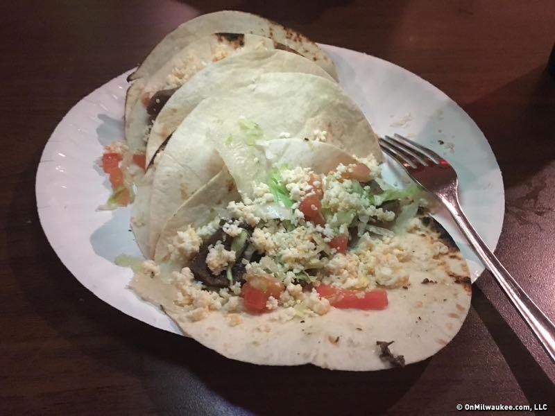

Conejitos Place
Authentic Mexican Food
Milwaukee’s Mexican Restaurant. Conejitos offers a timeless, relaxed atmosphere that envelops guests in gracious hospitality.
From the moment you arrive, you will experience the cordial staff and impeccable service that set us apart from any other restaurant in the city. We like to think of Conejitos as your own special place. A place where you can enjoy a relaxed dining experience with friends, family and associates.